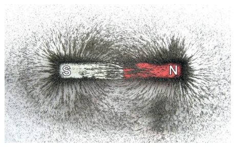
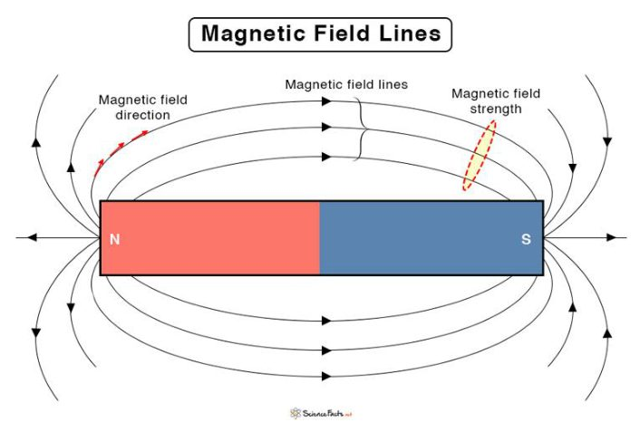
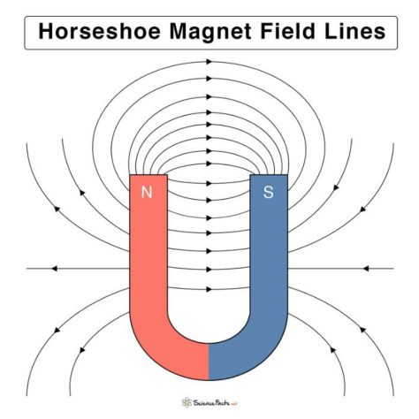
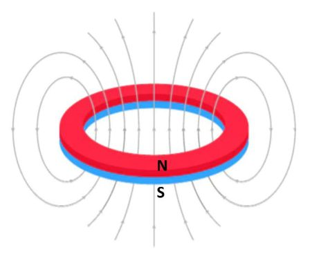
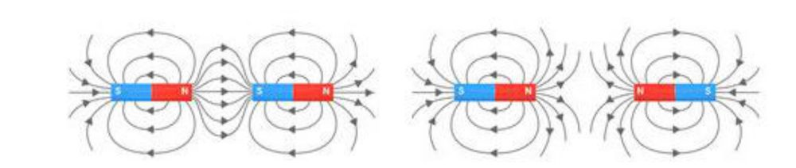
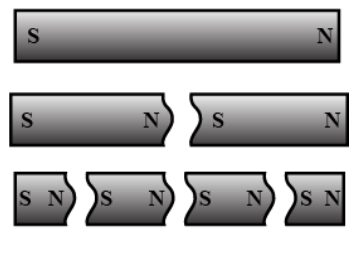
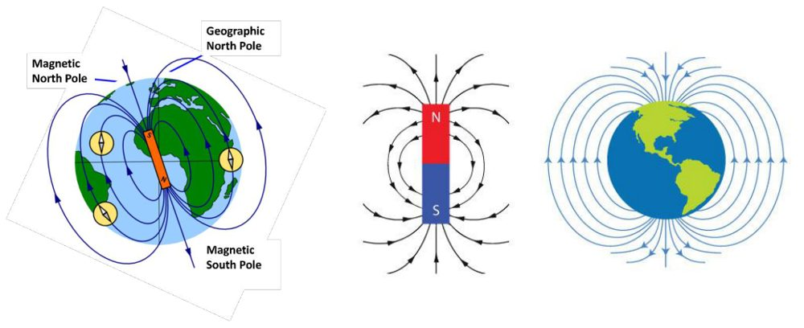
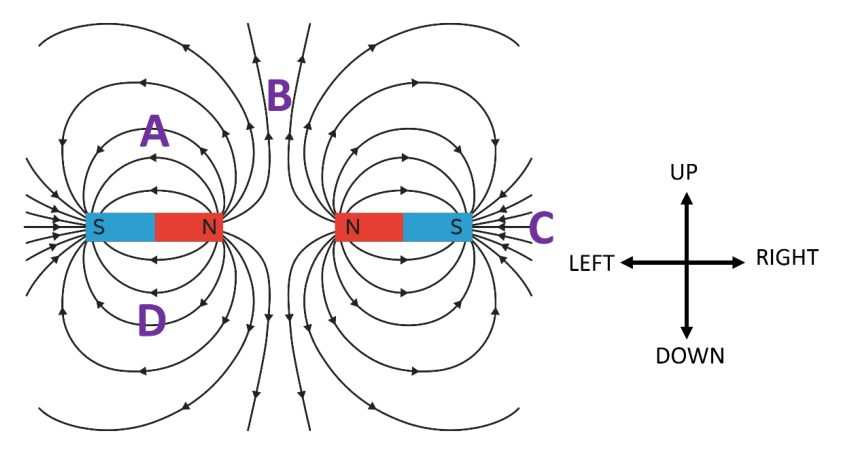

3.1 Magnetic fields
Magnetism has been known since the ancient Greeks. The idea of a magnetic field was first put forward by Michael Faraday (1791–1867).
The shape of a magnetic field is revealed by magnetic field lines, which can be seen by scattering iron filings around a magnet. The field lines spread out from one pole, curve around the magnet, and return to the other pole.

A few elements can form permanent magnets, either naturally or by being placed in a strong magnetic field: iron, nickel and cobalt.
The three elements that can form permanent magnets are , and .
Drawing field lines
The direction of the field outside the magnet is from the North pole to the South pole. There are two rules for drawing field lines:
- Field lines do not cross.
- Each field line is a continuous loop that leaves the north pole, enters at the south pole, and passes through the magnet back to the north pole.
The closer the field lines, the stronger the field.

Other magnetic field shapes
All magnets have a North and a South pole, but the poles are in different positions depending on the magnet's shape. Pairs of magnets also affect each other's fields.



Prac: sketching magnetic fields
Aim: to investigate the magnetic fields around bar magnets and gain experience with field lines.
Apparatus: 2 bar magnets, plotting compasses, iron filings in oil.
- Place the magnets under the iron filings/oil viewer and draw the pattern.
- Remove the viewer without moving the magnets.
- Place a plotting compass near the magnets and slowly move it in the direction it points. This traces a field line and shows the direction of the field.
The plotting compass points in the direction of the magnetic field where it is placed, and the iron filings show the shape of the field. By moving a compass around the magnets, the whole field can be mapped. Sketch the field for four arrangements of the magnets.
Properties of magnets
- When opposite poles of two magnets are brought together, the magnets attract.
- When like poles are brought together, the magnets repel.
Dipoles
If a bar magnet is broken in half, a North and a South pole form on each piece. It is not possible to make a monopole (a magnet with only one pole). Magnets always form a dipole.

Earth's magnetic field
The Earth has a dipolar magnetic field that acts like a huge bar magnet. A compass magnet is free to line up with the Earth's field, so compasses "point" to the magnetic north pole, which is slightly offset from the geographic north pole. Because field lines go from N to S, this means there is effectively an inverted bar magnet inside the Earth: its magnetic south pole is near the geographic north pole.

Section 3.1: Key summary questions
Describe the field lines you would draw (a) around a single bar magnet and (b) between two bar magnets placed end to end with opposite poles facing.
- Six continuous, non-crossing loops that leave the N pole, curve around the magnet and enter the S pole, with arrows pointing from N to S outside the magnet. The lines are closest together near the poles.
- Lines go straight across the gap from the N pole of one magnet to the S pole of the other (closely spaced, showing a strong field), with other lines looping around the outsides of both magnets. All arrows point from N to S.
Two bar magnets are placed with opposite poles facing each other. Would they be attracted or repelled?
Opposite (unlike) poles attract.
Are magnets monopole or dipole in nature?
Magnets always have both a North and a South pole, even when broken in half.
The diagram shows field lines around a pair of bar magnets. Which direction would a compass point at each point?

| Point | Direction |
|---|---|
| A | |
| B | |
| C | |
| D |
A compass points along the field line at that point, in the direction of the field (away from N poles, towards S poles).